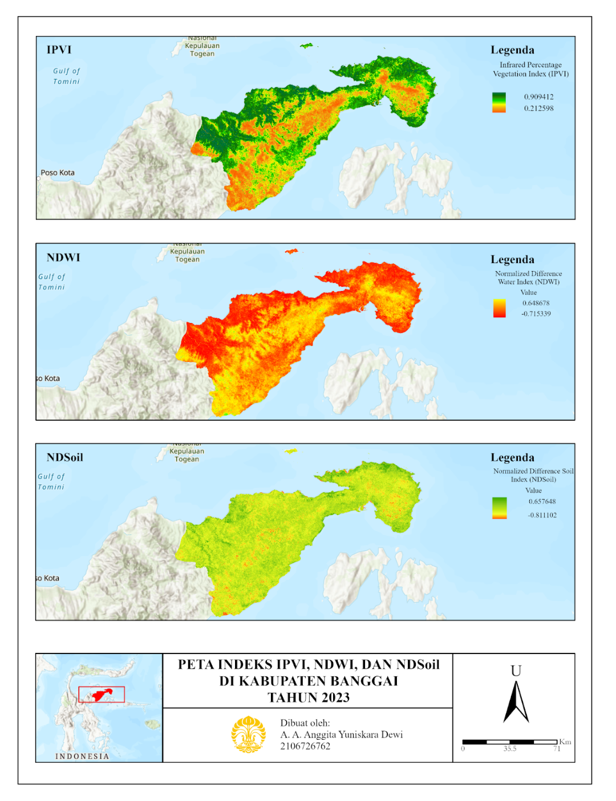
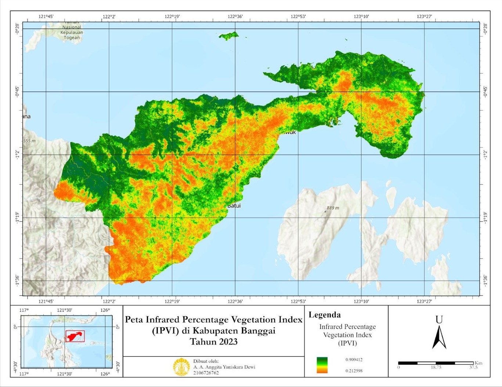
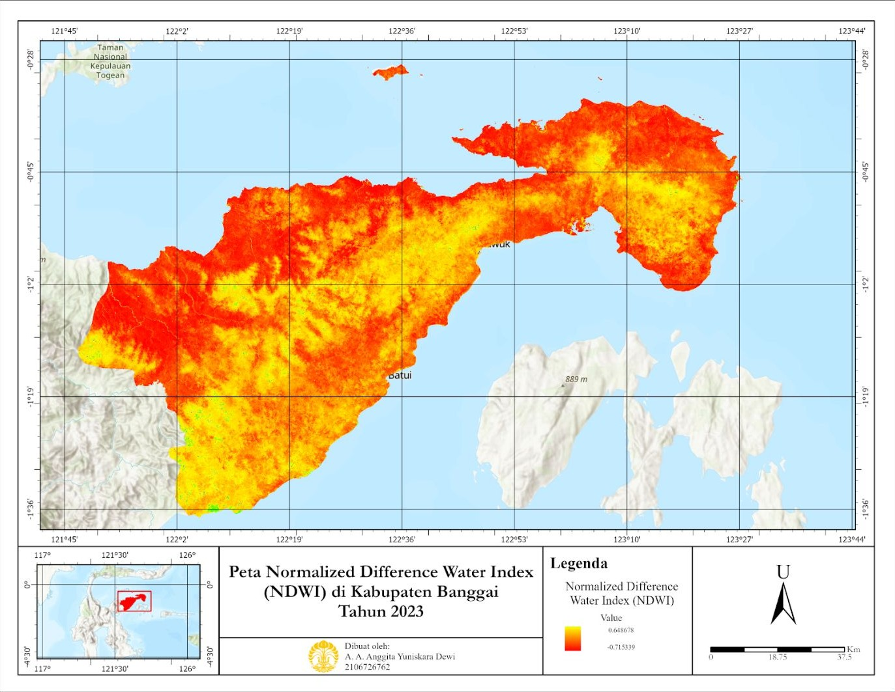
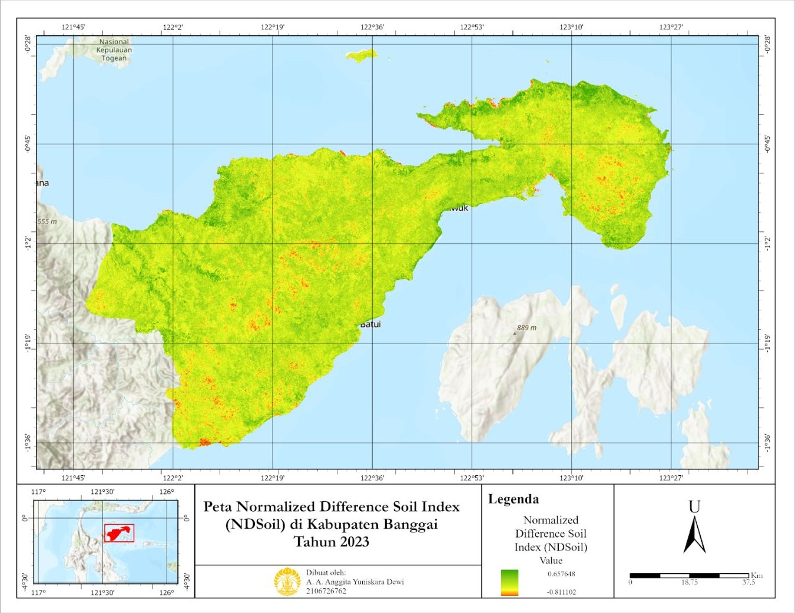

Analisis Sebaran Vegetasi, Tanah, dan Air di Kabupaten Banggai Memanfaatkan Penginderaan Jauh dengan Indeks NDWI, NDSoil, dan IPVI

Latar belakang
Pertumbuhan penduduk yang cepat mendorong urbanisasi dan alih fungsi lahan. Lahan vegetasi, sawah, dan hutan berubah menjadi permukiman, infrastruktur, dan industri. Perubahan ini memengaruhi tiga unsur penting lingkungan sekaligus: vegetasi yang menjadi habitat serta penyimpan karbon dan penghasil oksigen, aliran air permukaan beserta area resapannya, dan kesuburan serta sebaran jenis tanah.
Kabupaten Banggai di Sulawesi Tengah menghadapi tantangan serupa, yaitu menjaga keseimbangan antara pelestarian lingkungan dan kebutuhan infrastruktur yang meningkat. Karena itu, penelitian ini menganalisis sebaran vegetasi, tanah, dan air di Kabupaten Banggai dengan data penginderaan jauh dan tiga indeks, yaitu Infrared Percentage Vegetation Index (IPVI), Normalized Difference Water Index (NDWI), dan Normalized Difference Soil Index (NDSoil), sebagai dasar pengelolaan pembangunan dan pelestarian lingkungan yang berkelanjutan.
Data yang digunakan
| Data | Format Data | Jenis Data | Sumber |
|---|---|---|---|
| Citra Landsat 8 (1 Januari – 31 Desember 2023) | Raster | Sekunder | Google Earth Engine |
| Batas administrasi Kabupaten Banggai | Vektor (Shapefile) | Sekunder | Ina-Geoportal |
Metode
Seluruh data yang digunakan adalah data sekunder. Shapefile Kabupaten Banggai diunduh dari Ina-Geoportal lalu diunggah ke Google Earth Engine (GEE), sedangkan citra Landsat 8 tahun 2023 dipanggil langsung melalui script di GEE dengan memilih band yang diperlukan. Tiga indeks kemudian dihitung dari band tersebut.
| Indeks | Rumus | Band Landsat 8 | Kegunaan |
|---|---|---|---|
| IPVI | 0,5 × (NDVI + 1) | NIR (B5), Red (B4) | Sebaran vegetasi |
| NDWI | (Green − NIR) / (Green + NIR) | Green (B3), NIR (B5) | Keberadaan air dan kebasahan |
| NDSoil | (SWIR − NIR) / (SWIR + NIR) | SWIR (B6), NIR (B5) | Keterbukaan dan kondisi tanah |
Hasil perhitungan divisualisasikan di GEE dengan palet warna, lalu diekspor ke Google Drive dalam format GeoTIFF beresolusi 30 meter. Citra tersebut kemudian dimasukkan ke ArcGIS bersama shapefile kabupaten, dipotong dengan proses extract by mask agar sesuai dengan wilayah penelitian, dan divisualisasikan dalam bentuk interval nilai untuk diinterpretasikan.
Hasil
Nilai IPVI berkisar 0 sampai 1, dengan nilai yang lebih tinggi menunjukkan vegetasi yang lebih padat. Vegetasi di Banggai terbagi hampir merata antara kelas padat dan rendah. Vegetasi padat cenderung berada di wilayah utara yang berbatasan dengan Teluk Tomini, kemungkinan karena wilayah itu belum banyak dijadikan kawasan bermukim dan industri. Vegetasi rendah cenderung berada di wilayah yang berdekatan dengan kabupaten lain, yang diduga lebih banyak berubah menjadi permukiman dan industri.

Nilai NDWI berkisar −1 sampai 1, dengan nilai positif menunjukkan keberadaan air dan nilai negatif menunjukkan non-air seperti daratan atau vegetasi. Banggai didominasi oleh nilai yang cenderung rendah (merah hingga kuning). Hal ini sejalan dengan hasil IPVI, karena vegetasi yang padat menyerap air tanah melalui akarnya sehingga sedikit air yang tampak di permukaan pada citra.

Pada NDSoil, nilai yang mendekati 0 menandakan permukaan tanah tertutup tumbuhan, sedangkan nilai yang makin besar menandakan tanah yang makin terbuka. Banggai didominasi warna hijau dan kuning, sehingga permukaan tanahnya sebagian besar tertutup tumbuhan. Tanah dengan keterbukaan lebih tinggi cenderung berada di pesisir, sedangkan titik-titik yang tertutup air muncul di bagian tengah dan pinggir wilayah.

Kesimpulan
Kondisi Kabupaten Banggai masih tergolong baik dalam menjaga kualitas lingkungan, ditunjukkan oleh vegetasi yang masih dominan, kelembaban yang mengikuti sebaran vegetasi, dan tanah yang sebagian besar tertutup tanaman. Ketiga indeks saling berkaitan dan menunjukkan bahwa lonjakan pertumbuhan penduduk masih dapat dikendalikan, terlihat dari wilayah bermukim yang masih tersebar. Namun, kondisi ini dapat berubah seiring pertumbuhan penduduk dan dinamika permukaan bumi, sehingga pemantauan berkala tetap diperlukan.
← View other projects